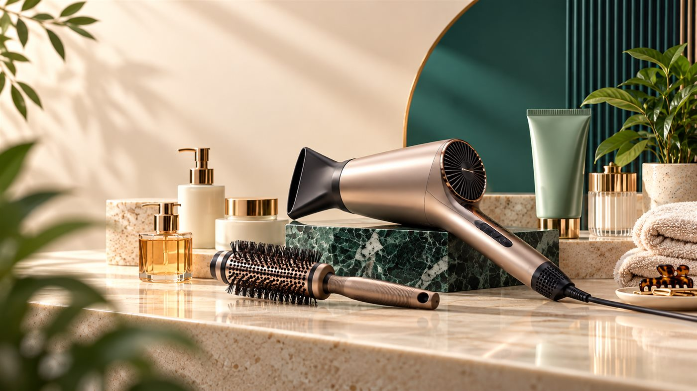

اتو مو سرامیکی یا تیتانیومی؟ راهنمای انتخاب بر اساس نوع مو
مقایسه صفحات سرامیکی و تیتانیومی اتو مو با تمرکز بر کنترل دما، نوع مو، سرعت گرمشدن، آسیب حرارتی و روش استفاده.
آخرین بازبینی: 2026-10-27 · راهنمای تحریریه سنجو

در سنجو هدف این راهنما انتخاب آگاهانه بر اساس کاربرد است، نه معرفی یک برنده مطلق. مشخصات مدلها میتواند تغییر کند؛ معیارها را با نیاز واقعی خودت تطبیق بده.
صفحات سرامیکی
سرامیک معمولاً با هدف توزیع یکنواختتر گرما استفاده میشود. برای افرادی که کنترل دما و استفاده روزمره متعادل میخواهند، میتواند گزینه قابل بررسی باشد. کیفیت پوشش سرامیکی در مدلهای مختلف یکسان نیست.
صفحات تیتانیومی
تیتانیوم میتواند سریع گرم شود و انتقال حرارت بالایی داشته باشد. برای موهای بسیار ضخیم یا استفاده حرفهای ممکن است جذاب باشد، اما دمای بالا بدون کنترل مناسب میتواند ریسک آسیب حرارتی را بیشتر کند.
کنترل دما مهمتر از بیشترین دما است
موهای نازک یا آسیبدیده معمولاً به گرمای کمتری نیاز دارند. انتخاب دستگاهی با تنظیمات قابل کنترل کمک میکند از دمای بیش از نیاز استفاده نکنی.
عرض صفحه را با طول و حجم مو هماهنگ کن
صفحه باریک برای بخشهای کوچک، چتری یا فرمدهی انعطاف بیشتری دارد. صفحه عریض میتواند روی موهای بلند و پرحجم سرعت کار را افزایش دهد.
روش استفاده
مو را خشک و بخشبندی کن، از مکث طولانی روی یک نقطه خودداری کن و دما را از سطح پایینتر شروع کن. محافظ حرارتی مناسب میتواند بخشی از روتین باشد.
انتخاب عملی
بهجای تصمیم فقط بر اساس نام جنس صفحه، نوع مو، تعداد دفعات استفاده، کنترل دما و کیفیت ساخت را کنار هم ببین.
چکلیست نهایی
- کاربرد اصلی را مشخص کن.
- دو یا سه معیار اثرگذار را اولویتبندی کن.
- شرایط نگهداری و قطعات مصرفی را بررسی کن.
- مشخصات نهایی را پیش از خرید از سازنده یا فروشنده بررسی کن.
مطالب مرتبط: guide hair dryer · guide hot air brush
قیمت و مدلهای موجود را ببین
بعد از مشخصکردن معیارها، مدلهای مرتبط را در فروشگاه ببین و قیمت، موجودی، فروشنده و مشخصات نهایی را همانجا دوباره بررسی کن.
این دکمه جستوجوی مرتبط را باز میکند؛ قیمت و موجودی ممکن است تغییر کند.